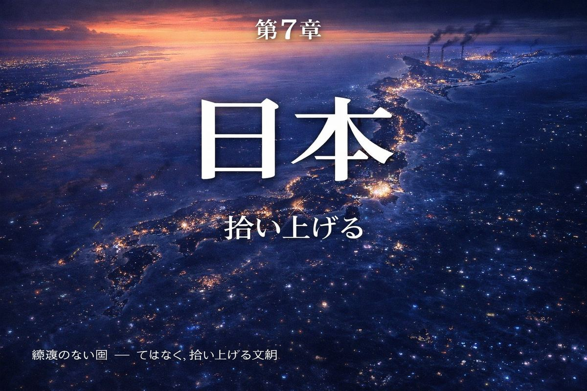
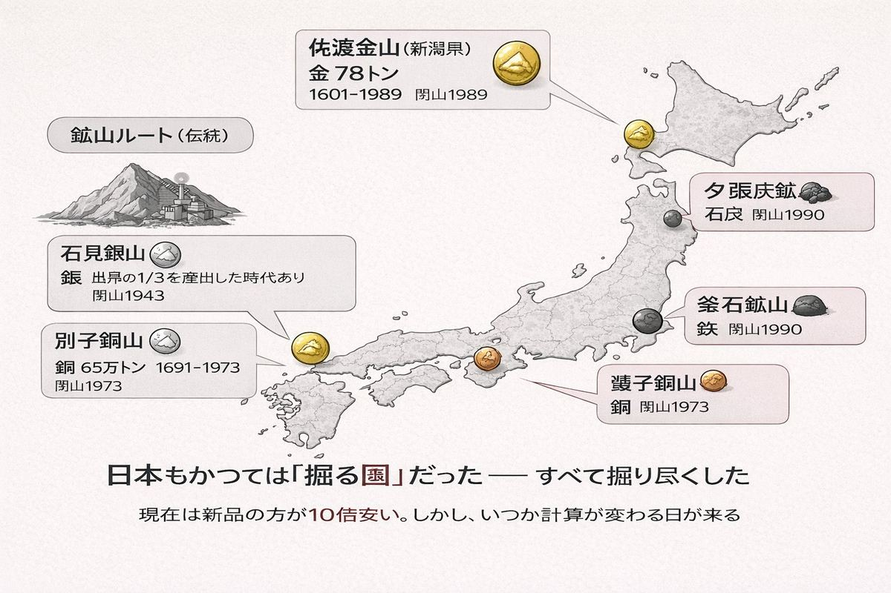
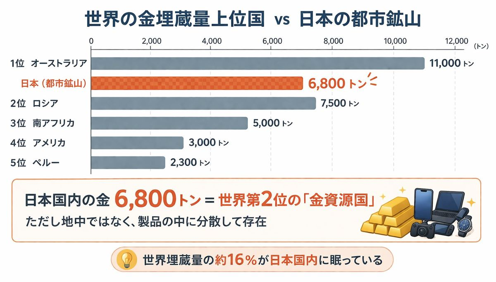
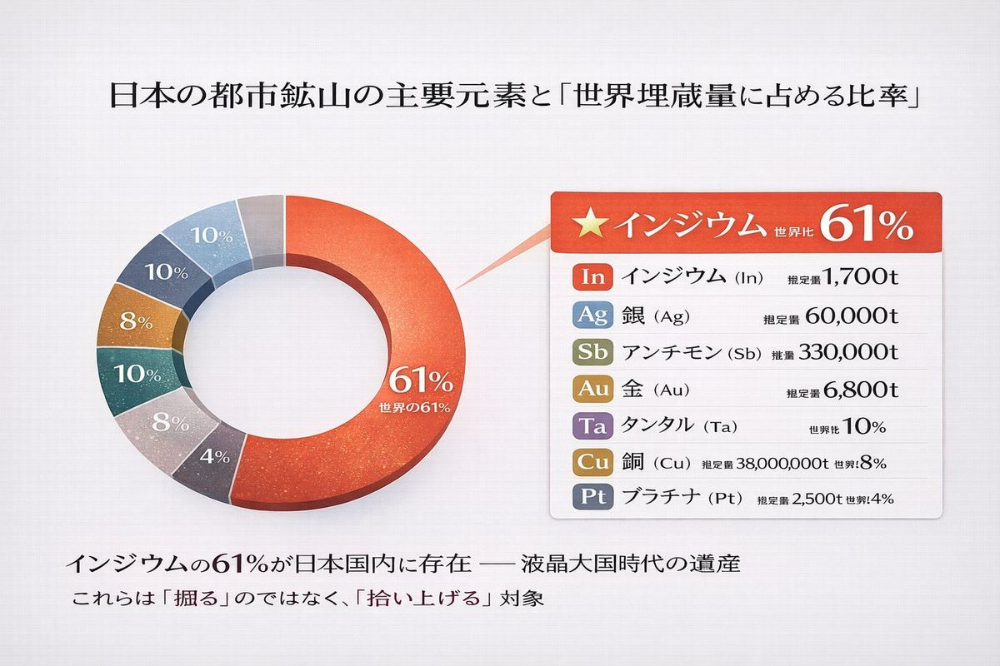
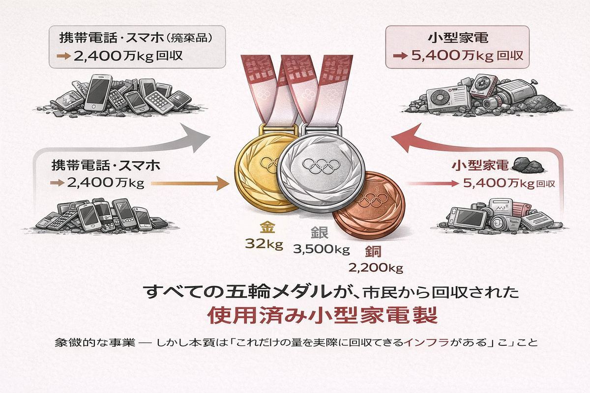
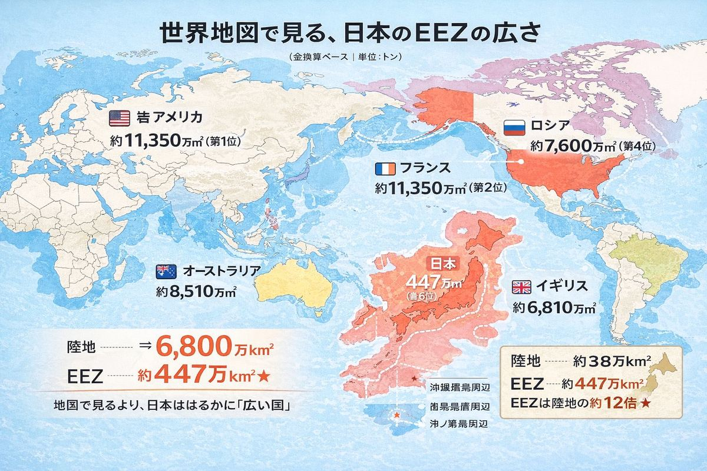
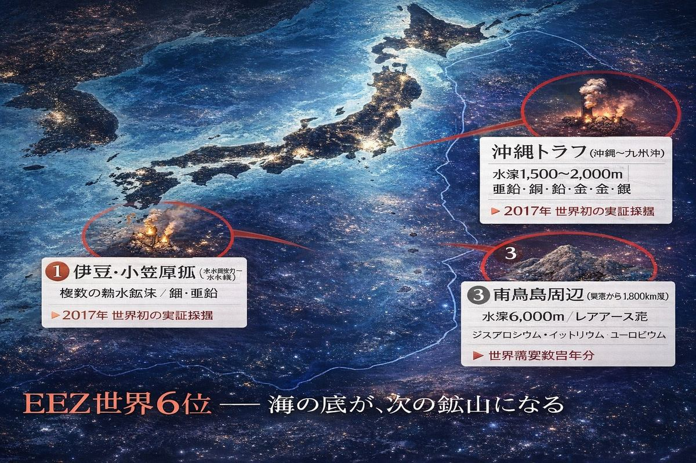
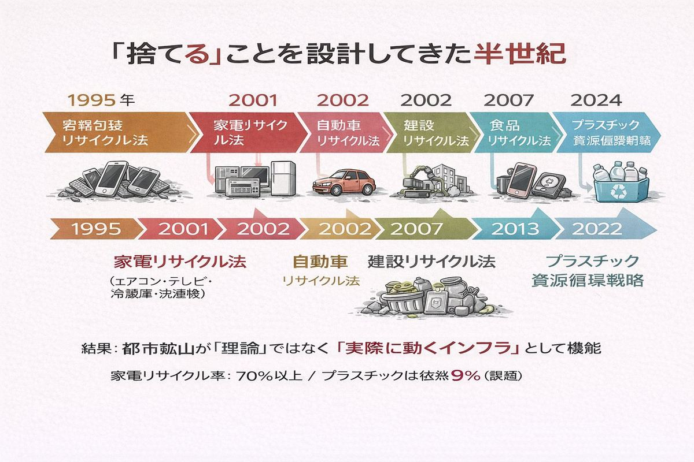

国土の小ささは、運命ではない。 ── 出典不明（おそらく明治期のどこかの政治家）
A. 約30% B. 約10% C. ほぼ0%
正解はC。ほぼ0%。
鉄、銅、ニッケル、アルミ、亜鉛、ボーキサイト、レアアース、リチウム──現代文明を動かすほぼすべての金属について、日本は100%近くを輸入に頼っている。エネルギー自給率も約13%しかない。残りはすべて海の向こうから運ばれてくる。
これは戦後ずっと変わらない構造だ。「資源のない国」というフレーズは、小学校の社会科から経済評論家のニュース解説まで、繰り返し聞かされてきた。
しかし、本当にそうだろうか。
別の見方をすれば、日本ほど「資源の使い方」が試されている国はない。掘れないから、回す。掘れないから、拾い上げる。掘れないから、海に潜る。
「資源のない国」は、「資源の使い方を発明する国」になりうる。第6章で見たレアアースの教訓も、この方向を指していた。

実は日本も、かつては「掘る国」だった。
佐渡金山。新潟県沖の島で、江戸幕府の財政を支えた金の産地。1601年に発見され、ピーク時には世界の金生産の重要な一角を占めた。江戸時代を通じて約78トンの金が掘り出された。2024年にユネスコ世界遺産に登録された。
石見銀山。島根県の山間部で、16世紀から19世紀にかけて世界の銀生産の3分の1を占めた時期もあると言われる。当時の世界経済を、日本の銀が動かしていた。スペインのポトシ銀山と並ぶ、グローバル経済の主役の一人だった。
別子銅山。愛媛県の山中で、1691年に発見されてから1973年に閉山するまで、約282年間で約65万トンの銅を産出した。住友財閥の起源はここにある。
これらだけではない。生野銀山、足尾銅山、夕張炭鉱、釜石鉱山。日本列島は、沈み込み帯の上にあるという地質学的な恵みのおかげで、金・銀・銅・鉄・石炭をそれなりに産出できる「掘る国」だった。
しかし、すべて掘り尽くした。
20世紀後半、ほぼすべての鉱山が経済性を失い、次々と閉山した。残っているのは博物館と文化遺産だけだ。日本の「掘る国」としての歴史は、明治・大正・昭和を通じて少しずつ終わり、20世紀末に幕を閉じた。

ところが、別の数字を出すと、話が変わる。
日本国内に存在する金の総量は、約6,800トンと推定されている。これは世界の金埋蔵量（約5万トン）の約16%に相当する。
世界第2位の金「資源大国」だ。南アフリカもオーストラリアも、抜く。
ただし、この6,800トンは地中にあるのではない。すでに採掘され、精製され、製品として使われ、廃棄された電子機器や工業製品の中に分散して存在している。携帯電話の基板、パソコンのコネクタ、廃棄家電、産業廃棄物。
これを「都市鉱山」と呼ぶ。
都市鉱山の概念を最初に提唱したのは、1980年代の東北大学・南條道夫教授のグループだった。当時はまだ理論的なアイデアにすぎなかったが、2000年代以降、実際のデータが集まり始めた。物質・材料研究機構（NIMS）が2008年に発表した推計では、日本の都市鉱山の規模は驚くべき数字だった。
| 元素 | 都市鉱山の推定量 | 世界埋蔵量に対する比率 |
|---|---|---|
| 金 (Au) | 約6,800トン | 約16% |
| 銀 (Ag) | 約60,000トン | 約22% |
| 銅 (Cu) | 約3,800万トン | 約8% |
| インジウム (In) | 約1,700トン | 約61% |
| アンチモン (Sb) | 約330,000トン | 約19% |
| プラチナ (Pt) | 約2,500トン | 約4% |
インジウムに至っては、世界埋蔵量の61%が日本国内に「眠っている」。インジウムは液晶ディスプレイの透明電極に必須の元素だ。日本がかつて液晶大国だった時期に、大量のインジウムを輸入し、液晶パネルとして製品化し、世界中に売った。そして消費後の製品の一部が日本に戻ってくる。あるいは、日本国内で廃棄されたまま蓄積している。
つまり、日本は気付かないうちに「拾い上げる準備」ができていた。

問題は、「眠っている」のと「使える」のは違うことだ。
廃棄された電子基板から金を取り出すには、解体・粉砕・分離・精製の長い工程が必要だ。原料が多種多様で品質がバラバラなため、新しい鉱石を中国から買うほうが10倍以上安い。
しかし日本は、コストではなく技術で勝負することにした。
DOWAホールディングス、JX金属、三井金属、住友金属鉱山──これらの企業は、廃棄電子機器から銅・金・銀・パラジウム・インジウムを高効率で回収する技術を地道に磨いてきた。秋田県小坂町にあるDOWAエコシステムの製錬所では、世界中から集まる電子廃棄物（E-waste）を毎日大量に処理している。
東京2020オリンピックのメダルが、すべて都市鉱山由来の金属で作られたことを覚えているだろうか。約5,000個のメダルに必要な金32kg、銀3,500kg、銅2,200kg。これらは全て、市民から回収された使用済み携帯電話・小型家電から精製された。
象徴的なプロジェクトだったが、本質はその裏にある。これだけの量を実際に回収・精製できるインフラが、日本にはすでに存在しているということだ。
掘る国としての日本は終わった。しかし、拾い上げる国としての日本は、いま始まったばかりだ。

陸の話だけではない。
日本の領海と排他的経済水域（EEZ）を合わせた面積は、約447万km²。世界第6位だ。陸地面積（約38万km²）の約12倍。日本は地図で見るより、はるかに「広い国」なのだ。

そしてその海の底には、いくつもの宝物が眠っている。
沖縄トラフ。沖縄本島から南西に伸びる細長い海底盆地。ここには「海底熱水鉱床」と呼ばれる金属の集積場がある。海底の地下からマグマが上昇し、海水と反応して、亜鉛・銅・鉛・金・銀・レアアースを含む熱水噴出口を作る。噴出した金属が冷えて沈殿し、海底に高品位の鉱石を堆積させる。
2017年、日本は世界で初めて海底熱水鉱床からの実証採掘に成功した。沖縄トラフの水深約1,600メートルで、約16トンの鉱石を引き揚げた。商業化にはまだ距離があるが、技術的には可能だと示された。
伊豆・小笠原弧。本州から南に延びる海底火山列。同様の熱水鉱床が複数発見されている。
南鳥島周辺の深海泥。日本の最東端、東京から約1,800km離れた絶海の島。その周辺の水深約6,000メートルの海底に、大量のレアアースを含む泥が堆積している。2018年に東京大学の加藤泰浩教授らのグループが、世界需要数百年分のジスプロシウム・イットリウム・ユーロピウムが含まれていると発表した。
水深6,000メートル。これは技術的には極めて困難な深さだ。引き揚げのコストも、環境への影響も、まだ未知数だ。それでも「日本のEEZ内にある」という事実は重要だ。中国にも、中東にも、誰にも頼らずに、自国の領海から第6章の主役（ジスプロシウム）を取り出せる可能性がある。

都市鉱山と海底鉱床。この2つを「拾い上げる対象」と呼ぶなら、日本にはもう一つ、拾うインフラがある。
家電リサイクル法（2001年施行）。エアコン、テレビ、冷蔵庫、洗濯機の4品目について、メーカーがリサイクルの責任を負う。世界に先駆けた制度で、回収率は7割を超える。
小型家電リサイクル法（2013年施行）。携帯電話、デジタルカメラ、ゲーム機など28品目を対象に、自治体が回収する。先述の東京2020メダルプロジェクトはこの法律の延長線上にあった。
容器包装リサイクル法、自動車リサイクル法、食品リサイクル法、建設リサイクル法。法律の数を並べていくと、日本は「捨てる」ことに関して世界でもっとも整理された国の一つだ。捨てる先を分け、回収ルートを設計し、再資源化のルールを決める。これが半世紀かけて作られてきた。
完璧ではない。プラスチックリサイクル率は依然9%（世界平均と同じ）だし、細かな抜け穴も多い。しかし、都市鉱山が「ただの理論」ではなく「実際に動いているインフラ」として機能しているのは、こうした法制度の積み重ねがあるからだ。
掘れないから、回す仕組みを作る。資源がないから、資源の使い方を発明する。これは戦略というより、必然だった。

日本の資源戦略を一言で表すなら、「拾い上げる」という動詞になる。
陸では拾い上げる──廃棄された電子機器から、家電から、産業廃棄物から、貴金属とレアメタルを取り出す。
海では拾い上げる──水深1,600メートルの熱水鉱床から、6,000メートルのレアアース泥から、海底資源を引き揚げる。
歴史からも拾い上げる──佐渡金山も石見銀山も、いまは観光地として「過去の知識」を拾い上げる場になっている。何を、どう、どれだけ掘れたか。その記録は次の時代の戦略の参考になる。
そして文化からも拾い上げる──「もったいない」という言葉は、英語に直訳できない日本語の一つだ。MOTTAINAI として、ノーベル平和賞受賞者ワンガリ・マータイによって世界に紹介された。物を大切にする、捨てる前に考える、形を変えてもう一度使う。これは資源戦略以前の、文化的な習慣だ。
「掘る国」の時代は、世界中のどこかに必ず資源が残っていた。次の鉱山を見つければよかった。しかし21世紀は、見つけても掘り尽くされていく時代だ。地球全体が、ゆっくりと「掘る側」から「回す側」へ移行しつつある。
その移行において、日本は半歩か一歩先にいる。掘れないから先に始めた、というだけかもしれない。しかし結果として、技術もインフラも、そして文化的な準備もできている。
「資源のない国」というフレーズは、おそらく古い世代の記憶になる。次の世代が日本を表現するなら、「拾い上げる国」のほうが正確だろう。